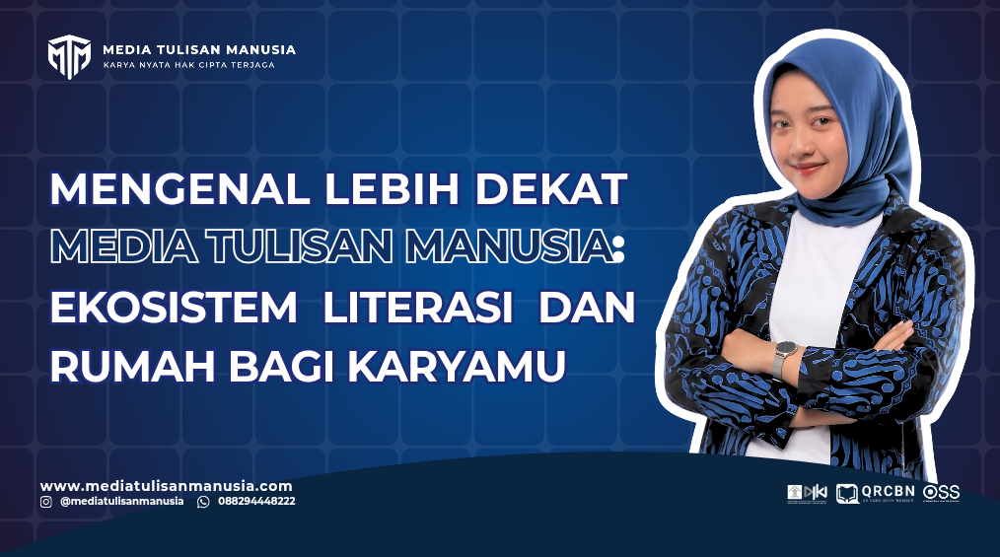
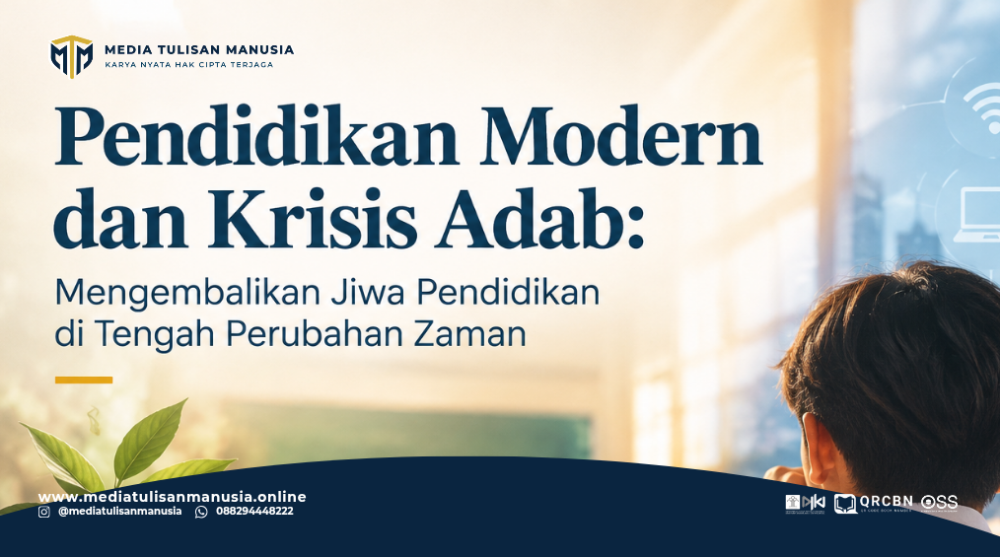
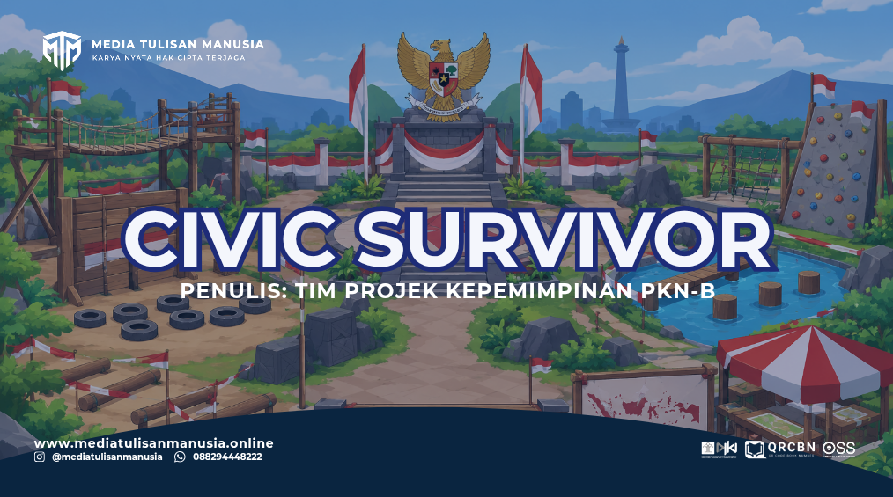
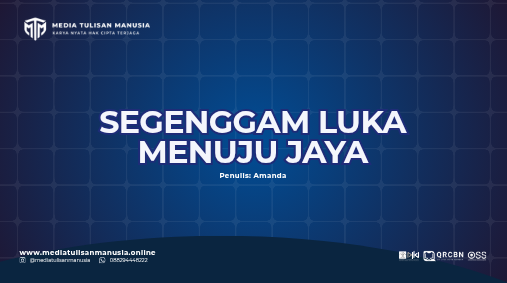
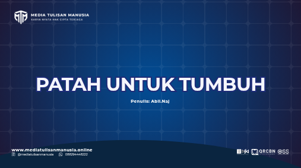
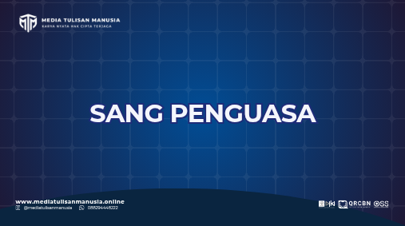
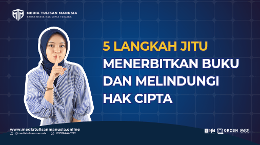
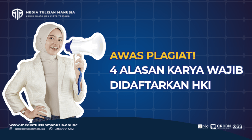

Eksplorasi kumpulan artikel, opini, cerpen, puisi, dan ragam karya sastra terbaik dari Media Tulisan Manusia.

Profil & Layanan
Setiap manusia memiliki cerita, namun tidak semua tahu ke mana harus membawanya. Media Tulisan Manusia hadir dari sebuah keyakinan...
Baca Selengkapnya
Artikel Edukasi
Pendidikan sering dipahami sebagai jalan menuju masa depan yang lebih baik. Melalui pendidikan, seseorang memperoleh pengetahuan...
Baca Artikel
Berita & Edukasi
Mahasiswa Program Pendidikan Profesi Guru (PPG) Pendidikan Pancasila Kelas B Universitas PGRI Kanjuruhan Malang melaksanakan proyek...
Baca Artikel
Cerpen Sastra
Ini adalah kisahku. Aku adalah perempuan yang terlahir dari keluarga yang sederhana. Namun sedari kecil aku mengagumi seseorang...
Baca Cerpen
Cerpen Sastra
“Tuhan, bisakah aku merasakan bahagia barang sedikit saja?” Di bulan November tahun kemarin, aku menemukanmu...
Baca CerpenPuisi
Senikmat kopi di pagi hari, kuseduh sendiri. Apakah rindu harus berdua? Bagaimana dengan rindu tak bertuan?...
Baca Puisi
Puisi
Jika kau tak tahu, pula dia yang tak mengerti, dan jika mereka juga tak paham, katakanlah akulah sang penguasa...
Baca PuisiCerpen Sastra
Banyak berubah di kota ini sejak 3 tahun lalu. Di ujung jalan aku melihat seorang paruh baya memainkan gitar dengan jemarinya...
Baca Cerpen
Edukasi Literasi
Ingin menerbitkan buku tapi takut karya dibajak? Simak 5 langkah jitu menerbitkan buku...
Baca Karya
Legalitas & Hukum
Jangan biarkan ide kreatif Anda dibajak! Simak pentingnya mendaftarkan Hak Cipta...
Baca KaryaKarya yang Anda cari tidak ditemukan.